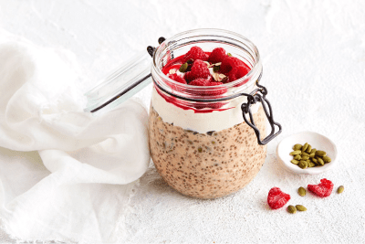
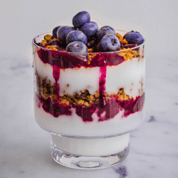
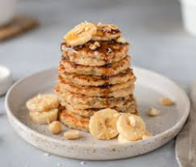

Breakfast Boost: Healthy Recipes & Meal Prep Ideas
Welcome to Breakfast Boost: Healthy Recipes & Meal Prep Ideas! We understand the importance of starting your day off right, which is why we are your go-to resource for nutritious and delicious breakfast recipes and meal prep ideas. Whether you are searching for quick and easy recipes or make-ahead meal prep ideas, we have got you covered.
Subscribe to our newsletter for exclusive recipes, meal prep tips, and the latest updates straight to your inbox.
Subscribe NowExplore Nutritious Breakfast Recipes
Check out our selection of quick breakfast recipes that you can whip up in minutes. Our Overnight Oats recipe is a hassle-free breakfast that you can prepare the night before and grab on your way out the door. Or you can try our Rise and Shine Parfait—a creamy and delicious morning treat that's quick to assemble.
Quick and Easy Breakfast Options:
Smart Meal Prep Ideas for Busy Mornings
For those mornings when you require an extra boost to fuel your day our protein-packed breakfast options are exactly what you need. Treat yourself to our Hash Brown Quiche Cups, perfect for meal prep and convenient for on-the-go breakfasts. Don't miss out on our Protein Pancakes, a delectable take on a breakfast classic, or try our Breakfast Burritos for a satisfying and nutritious start to your day.